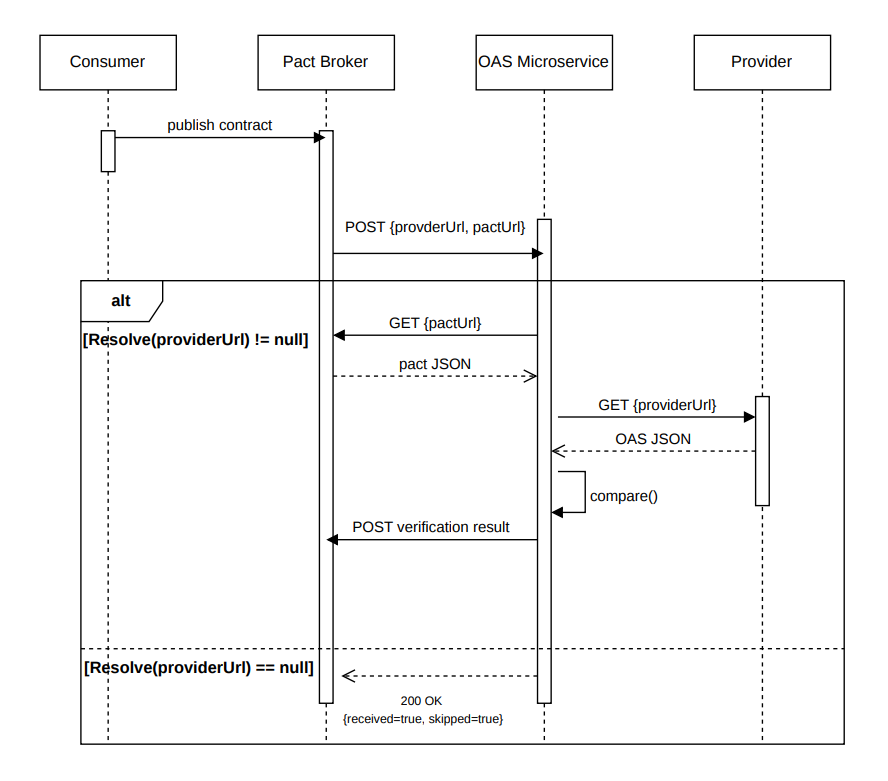

OAS Service
The OAS Microservice is a tool for consumer-driven contract testing (CDCT). It is used when you cannot run tests on the provider side directly. Instead of setting up a provider test, you can test your consumer contract against the provider's OpenAPI Specification (OAS/Swagger) file.
When to use it
Use this if all of the following are true:
- You have a consumer you want to test against a provider
- You cannot set up a provider test using the standard CDCT method
- You have access to the provider's OAS URL
- The provider has a stable name in the Pact contract.
Do not use the OAS URL directly as the Pact provider name. URLs may contain characters such as / and :, which can cause problems when Pact writes the contract file.
Instead, use a filesystem-safe provider name:
const pact = new Pact({
consumer: "Frontend",
provider: "[URL...]-swagger.json",
dir: path.resolve(process.cwd(), "pacts")
});
The actual OAS URL is passed separately when the webhook is created:
https://[provider-url]/swagger/v1/swagger.json
How does it work?
The microservice takes a Pact contract and compares it against the provider's swagger.json file.
Every time the consumer publishes a contract to the Pact Broker, the broker fires a webhook to the OAS Microservice with three values: providerUrl, pactUrl, and publishVerificationResult.
providerUrl: the actual URL of the provider’s OAS filepactUrl: the URL of the published Pact contractpublishVerificationResult: whether the result should be published back to the Broker

From there:
Resolve(providerUrl)is called to check whether the URL is a valid absolute URL pointing to a Swagger endpoint.-
Two things can happen:
- If the URL cannot be resolved, the microservice skips the comparison and tells the broker the webhook ran successfully.
- If the URL resolves,
Compare()is called.
Compare()fetches both the OAS and the Pact as JSON and compares them.- The result is sent back to the Pact Broker as a verification result, where it becomes visible in the broker UI.
How to use it
The microservice is available at: [internal microservice URL]
The recommended approach is to create the webhook from the consumer CI pipeline after publishing the Pact:
- name: Create OAS webhook
uses: PracticalPact/pactbroker-webhook-action/webhook-OAS-action@main
with:
brokerUrl: ${{ vars.BROKER_URL }}
providerName: [provider-url]-swagger.json
oasUrl: https://[provider-url]/swagger/v1/swagger.json
oasServiceUrl: https://[internal microservice URL]
The action creates a webhook for the specific consumer-provider pair. The generated webhook has this structure:
{
"events": [
{
"name": "contract_content_changed"
}
],
"request": {
"method": "POST",
"url": "https://PracticalPact/oas-service/compare-from-webhook",
"headers": {
"content-type": "application/json",
"accept": "application/json"
},
"body": {
"providerUrl": "[input URL...]//swagger.json",
"pactUrl": "${pactbroker.pactUrl}",
"publishVerificationResult": true
}
}
}